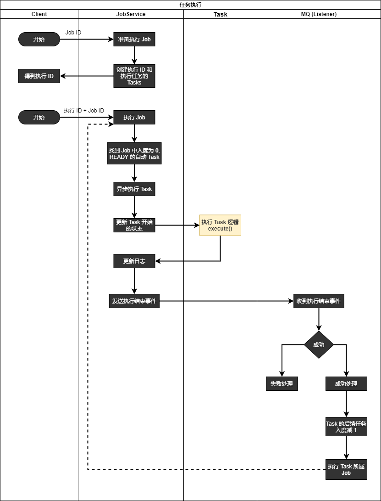

如下图所示的一个任务设计:
- 任务 1 和任务 2 可以同时执行，等他们都结束后才能执行任务 3
- 任务 4 执行结束后可以同时执行任务 5 和任务 6
- 任务 8 执行结束后则任务执行完成
如果用程序来实现这个任务的调度，触发任务的执行，应该怎么做呢？
通过观察，这是一个有向无环图，要访问某个节点 (执行任务)，需要先访问它的所有前驱节点，而且每个节点只能访问一次，这是一个典型的可以使用图的拓扑排序解决的问题。
什么是拓扑排序
维基百科对于拓扑排序的定义:
In computer science, a topological sort or topological ordering of a directed graph is a linear ordering of its vertices such that for every directed edge uv from vertex u to vertex v, u comes before v in the ordering. For instance, the vertices of the graph may represent tasks to be performed, and the edges may represent constraints that one task must be performed before another; in this application, a topological ordering is just a valid sequence for the tasks. A topological ordering is possible if and only if the graph has no directed cycles, that is, if it is a directed acyclic graph (DAG).
百度百科对于拓扑排序的定义:
对一个有向无环图 (Directed Acyclic Graph 简称 DAG) G 进行拓扑排序，是将 G 中所有顶点排成一个线性序列，使得图中任意一对顶点 u 和 v，若边 <u,v>∈E(G)，则 u 在线性序列中出现在 v 之前。通常，这样的线性序列称为满足拓扑次序 (Topological Order) 的序列，简称拓扑序列。简单的说，由某个集合上的一个偏序得到该集合上的一个全序，这个操作称之为拓扑排序。
拓扑排序的实现
看完上面拓扑排序的定义相信大家仍然是懵圈的，其实有向图的拓扑排序实现很简单:
- 在图中选一个没有前驱的顶点并且输出 (入度为 0 的顶点)
- 从图中删除该顶点和所有以它为尾的边 (后续节点的入度都减 1)
- 从图中删除此节点
- 重复步骤 1，直到没有入度为 0 的顶点为止
遍历结束的时候:
- 如果所有节点的入度都为 0，说明这是一个有向无环图，拓扑排序后所有节点都遍历了一遍
- 如果仍然有节点的入度不为 0，说明图中存在环
以文章开始处的任务设计图为例进行拓扑排序使用的介绍，定义任务的数据结构为:
- taskId: 任务的 ID
- name: 任务的名字
- inDegree: 任务的入度，也就是前驱任务的数量
- nextTaskIds: 后继任务的 ID 数组 (即使用临接链表存储图的数据)
- evaluateRunningTime: 任务预计执行时间
则整个任务图的数据为:
1 | var tasks = new Map(); |
使用拓扑排序执行任务的代码为:
1 | /** |
输出为:
1 | 任务 1 |
并行执行任务
上面的输出满足拓扑排序的特点: 图中任意一对顶点 u 和 v，若边 <u,v>∈E(G)，则 u 在线性序列中出现在 v 之前，但输出结果是串行的，实际上任务 1 与任务 2 应该能够同时并行执行，任务 5 和任务 6 也应该要同时并行执行，把串行的执行改为并行执行，只需要把在图中选一个没有前驱的顶点并且输出修改为在图中选所有没有前驱的顶点并且输出即可:
1 | /** |
输出为:
1 | [ '任务 1', '任务 2' ] |
并行任务的执行时间
如果是串行的执行任务，任务总的执行时间为所有任务的时间之和，但是由于有些任务是并发执行的，例如:
- 任务 1 执行需要 10s
- 任务 2 执行需要 20s
- 任务 3 执行需要 10s
- 任务 1 和任务 2 可以并行执行
所以任务 3 执行结束的时间为 30s，而不是 40s，因为任务 1 和任务 2 并行执行，它们执行结束的时间为它们中最后执行结束的时间 20s。支持并行任务的执行时间可参考下面的代码:
1 | /** |
计算任务的入度
建立有向无环图的任务前驱后继关系后，可以使用下面的函数计算每个任务 (节点) 的入度:
1 | /** |
例如给上面的任务 8 增加一个后续任务任务 6 (构成环，验证下面判断图是否有环的函数是否正确), 手动计算入度太麻烦，还容易出错，调用这个函数一下就自动计算出所有任务的入度了。
判断图是否有环
判断一个有向图是否有环，只需要对图使用拓扑排序，循环结束时还有节点没有访问则说明存在环。使用上面的第一个拓扑排序实现，while 结束后加一个判断即可:
1 | /** |
任务可视化
文章开头展示图中的任务间的连线使用了 jsPlumb 社区版实现的，其官方网址为 https://jsplumbtoolkit.com/community，这里只简单的展示了在任务间创建连线的功能，任务之间的关系编排，任务的属性修改等在实际项目中应该要可视化的操作，就像创建流程图的软件一样使用拖拽创建任务、任务间的连线等，由于篇幅所限，这里就不再深入讨论了，更多信息请阅读 jsPlumb 文档，都能够实现这些功能。
下载 jsPlumb Github Repo，解压，在 dist 文件夹中得到 jsplumb.min.js，只需要在页面中引入它即可。
1 |
|
实际中的任务调度系统
看到这里，我们是不是就可以实现一个支持并发执行的任务调度系统了吗？可惜现实是无情的，至此只能说是了解了任务并发执行的核心理论基础而已，这也是为什么很多人大学学习了数据结构和算法的课程，但是却不知道有什么用，甚至工作后不少人都几乎没用到过复杂一点的算法，于是认为数据结构和算法的课程没什么用处，殊不知很多核心知识在大学里已经学过，只是教学中理论和实践没有很好的联系起来。
在实际的任务调度系统中，任务的数据需要保存到数据库 (任务的调度中心、执行器、通知中心都可能在不同的服务上，数据要持久化保存到它们都能访问到的数据库)，调度执行任务也不是放在 while 循环里不停的尝试有没有任务可执行 (任务执行是需要时间的)，而是通过消息来触发调度中心执行后续可执行的任务，任务执行过程的监控、任务执行发生错误时修复相关问题后要支持继续执行、集群或者分布式系统中还要确保任务不会被重复执行等。
先介绍 2 个概念 job 和 task，帮助理解下面的任务调度系统泳道图:
- Task (任务): 通常表示做某件事的一个过程
- Job (作业): 通常表示用户提交的一个目标 (job)，期望明确的结果，完成这个目标需要很多步骤。Job 可以包含多个 task，可以认为 task 是一个 JobHandler
下面的泳道图描述了一个任务调度系统，能够满足绝大多数的实际需求:
要把此图写成代码，还会涉及到很多编程知识，有兴趣的小伙伴可以尝试实现一下，希望此文能够对大家有所帮助和启发，经常多复习下数据结构和算法等基础知识，非常有用的。